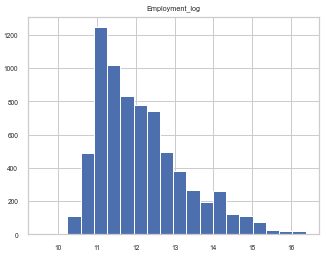
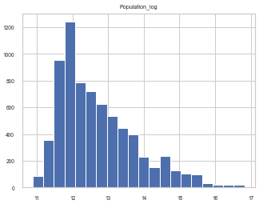
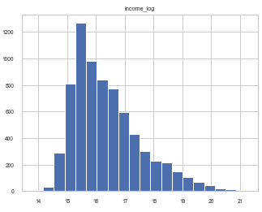

|
SARIMA and the Prediction Graph 
|
What is SARIMA? ARIMA or autoregressive integrated moving average is a forecasting method for univariate time series data. SARIMA is an extension of the ARIMA method that supports time series data with a seasonal component. On the main page, our prediction graph using a SARIMA model displays the historic average house price for metros from 2000 through our predicted values for 2024. Why did we choose to use SARIMA? Through our analysis of the data, we found that there was a seasonal aspect to monthly house pricing. In addition to this, SARIMA is typically an easy to understand and interpret model, making it more useful for casual users than a complicated model. How did we interpret significance of the model? Using error metrics like MSE, MAE, and RMSE we found that the SARIMA model is not perfectly accurate but the model captured underlying trends and patterns within the data. MSE | MAE | RMSE |
|
Housing Market Trends 
|
What are Trends? In analytics, Trends are long-term upward or downward changes in the average measured value. For our model on the main page, we showed the trends in regards to Employment, Population, and Average Price per state for each year from 2000-2020. Why might it be useful to display Trends? Housing prices can be heavily influenced by multiple factors, so showing the factors that have the most weight in regards to Trends can help a user better understand why our model predicts certain future prices. How did you determine these factors were the most influential? A regression analysis was performed with respect to house pricing and our results below indicated the most influential factors in house prices. Trends |
|
Employment  |
What is Employment? How is it calculated? What is its impact on the housing market? Employment |
|
Population  |
What is Population? How is it calculated? What is its impact on the housing market? Population |
|
Income  |
What is Income? How is it calculated? What is its impact on the housing market? Income |
Back to Top